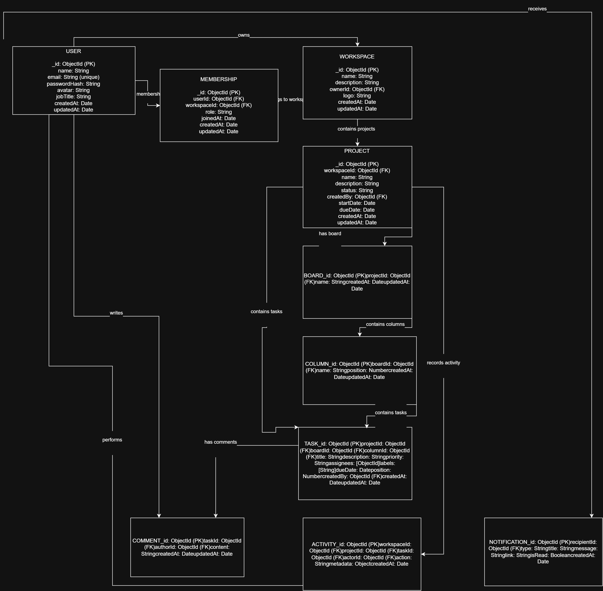
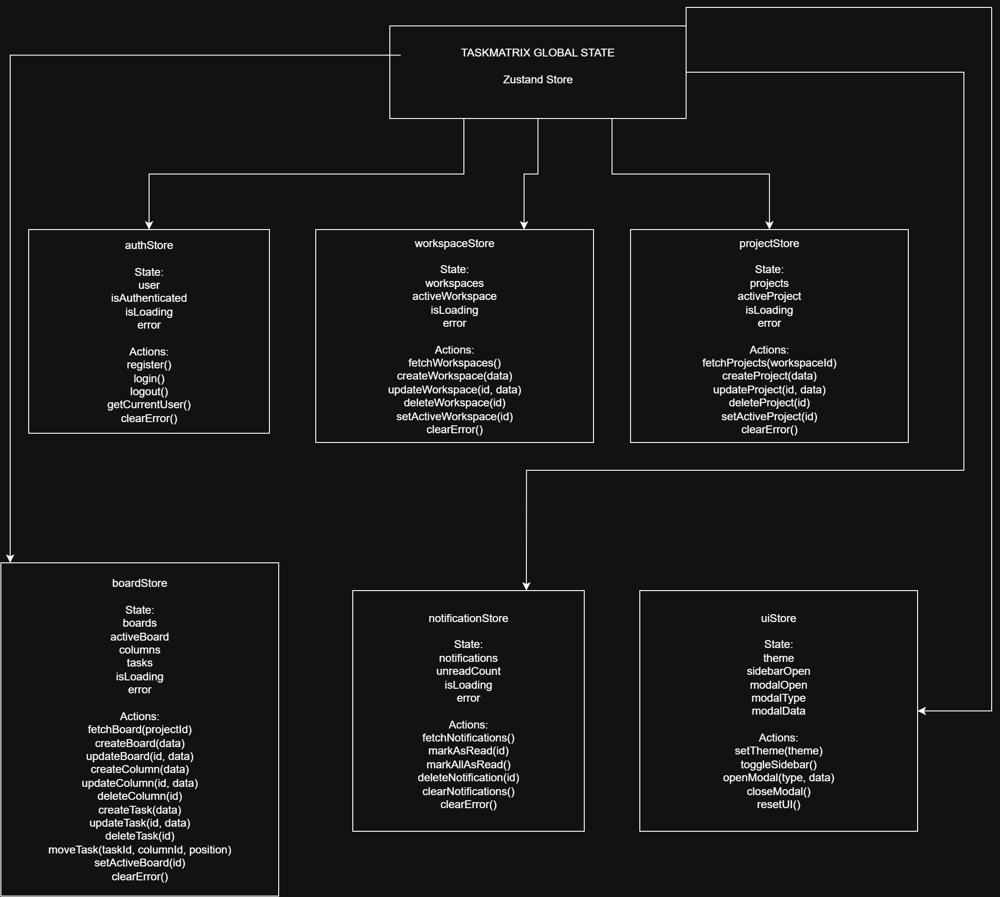

Prodesk IT Capstone Project
Manage projects with clarity and speed.
TaskMatrix is an enterprise Agile project management platform for organizing workspaces, projects, Kanban boards, tasks, deadlines, responsibilities and team collaboration.
Core capabilities
Everything teams need to organize their work.
TaskMatrix centralizes project planning, task execution and team collaboration in a single responsive platform.
Workspace Management
Create shared workspaces, invite team members and manage role-based permissions.
Project Management
Create projects, assign members, set deadlines and track project status.
Kanban Boards
Organize tasks visually with customizable workflow columns and drag-and-drop movement.
Task Management
Assign tasks, priorities, labels, deadlines, comments and attachments.
Notifications
Keep users informed about assignments, comments, deadlines and important updates.
Analytics
View workspace activity, task progress and project performance through dashboards.
Development roadmap
Prioritized for reliable delivery.
Essential functionality
- Authentication and protected routes
- Workspace and member management
- Project, board and column management
- Task creation, assignment and movement
- Role-based access control
Enhanced experience
- Drag-and-drop Kanban interaction
- Comments and activity timeline
- Search, filters and sorting
- Dashboard analytics
- Notification center and themes
Advanced capabilities
- Socket.IO real-time synchronization
- File attachments and email invitations
- Automated tests and CI workflow
- Database indexing and optimization
- Docker and Progressive Web App support
System planning
Architecture designed before development.
The project includes MongoDB data modelling and a focused Zustand frontend state architecture.

MongoDB ERD
Relationships between users, workspaces, projects, boards, columns, tasks, comments and notifications.

Frontend State Tree
Focused Zustand stores for authentication, workspaces, projects, boards, notifications and interface state.
Technology stack
Built with modern full-stack tools.
React
Vite
Zustand
Tailwind CSS
Node.js
Express.js
MongoDB
Mongoose
JWT
Socket.IO
Cloudinary
Vercel
Planning phase completed
TaskMatrix is ready for development.
Product requirements, feature priorities, wireframes, database architecture, frontend state planning and API endpoints have been documented.
View Complete Documentation